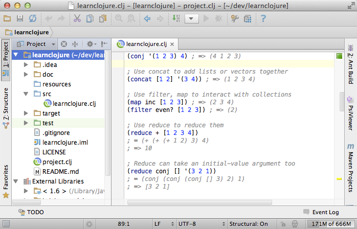
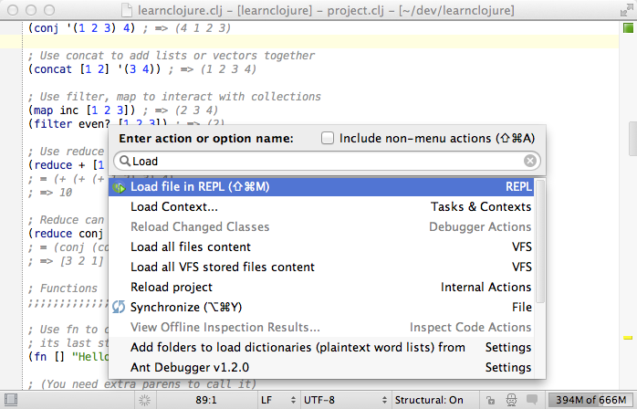

ユーザーインターフェース¶
幾つかの基本的な UI について説明します。
デフォルトの UI はこんな感じです。
ウィンドウの一番下がステータスバーで少し便利な情報が表示されています。中央にある編集用ウィンドウの周りにあるのがツールバーで、クリックすることでそれぞれに対応するウィンドウが開きます。この画像では、プロジェクトツールウィンドウが左側に表示されていています。それぞれのツールウィンドウは数字と結びついていて、 Alt + 数字 (Mac なら Cmd + 数字) と入力することで開いたり閉じたりすることができます。またツールバーをドラッグして動かせば好きな位置に置くことができます。
最小の UI 設定¶
Cursive Central では最小の UI を好みます。ここではどのように設定するか紹介します。まずはじめにステータスバーの左下にある四角いアイコンをクリックして全てのツールバーを隠します。一時的にステータスバーを元に戻したい場合は、 Alt (Mac なら Cmd) を 2 回押しましょう。プロジェクトウィンドウはボタンをクリックして隠します。それから View メニューの中から Toolbar と Navigation バーのチェックを外します。最後に、 Settings -> Editor -> Editor Tabs の Placement を None に設定します。するとこういう風になります。
タブがないけどファイル間の移動は出来るので心配しなくて大丈夫です。そのことについては「歩き方」のセクションで説明します。もちろん、あなたがタブ (もしくは他の上で述べた UI) を使うのが好きならそれを有効にして残しておけばいいです。
素早い検索¶
IntelliJ コンポーネントは素早く検索出来る機能を提供しています。あなたがタイプした文字列でフィルターしたアイテムのリストを表示します。具体的には Project ウィンドウでタイピングを始めると IDE は全てのテキストの中からマッチしたアイテムを返します。一般的に IntelliJ のほとんどはマウスを使わずに操作することができます。
ダークカラースキーマ¶
また IntelliJ はダークカラースキーマを提供します。それを有効にするには Settings -> Appearance -> Theme -> Darcula と設定します。
IntelliJ also provides a native dark colour scheme - enable it in Settings→Appearance→Theme→Darcula.
名前からアクションを検索¶
もしあなたが特定のアクションを実行したい場合は、あなたはいつでも Ctrl + Shift + A (Mac なら Cmd + Shift + A) を使って検索できます。タイピングをすることで全てのテキストからフィルターされたコマンドリストを表示します。
